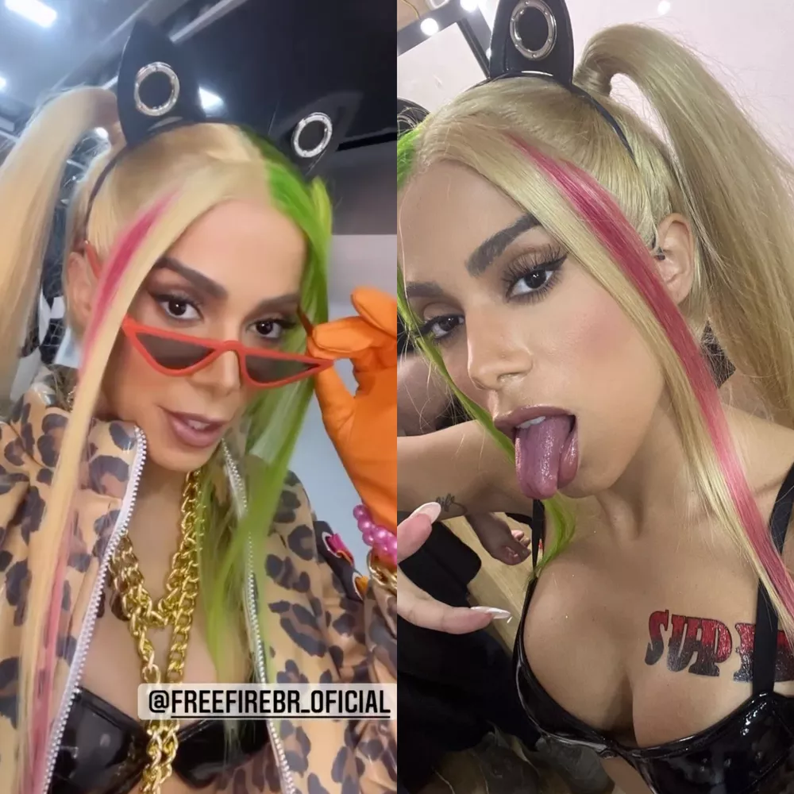
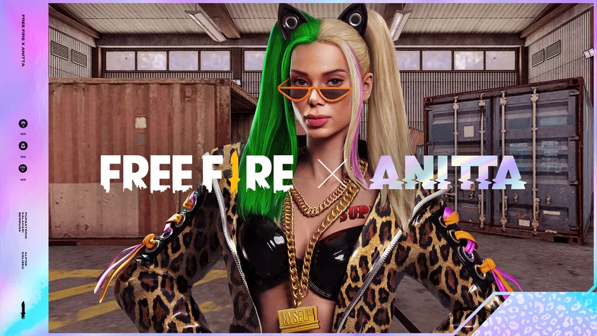

Na semana seguinte ao anúncio da parceria com o Free Fire, Anitta postou um vídeo e uma foto nas redes sociais com a mesma fantasia das artes de divulgação, o que deve ser a skin de A Patroa, sua personagem dentro do battle royale da Garena. A ação é mais uma para promover a colaboração, que contará com o lançamento de uma música exclusiva da cantora, evento comemorativo e outras novidades.
- Nada a dizer, apenas sentir - diz Anitta, uma referência ao que sua personagem dirá ao ser escolhida para uma partida, de acordo com o site Free Fire Mania.
. @FreeFireBR pic.twitter.com/w3fjNNoYwD
— Anitta (@Anitta) May 11, 2022
De acordo com a Garena, Anitta colocou sua identidade no evento ao participar de todo o processo criativo da colaboração, incluindo a elaboração da personagem e da música-tema.
Durante a pandemia de Covid-19, Anitta aproveitou para se aproximar do público gamer. No fim de 2020, ela passou a fazer lives no Facebook Gaming e inclusive chegou a jogar Free Fire com Bruno "Nobru", pro player dono do Fluxo e maior nome do competitivo do game no Brasil. Ainda vestiu uma roupa parecida com uma skin do battle royale da Garena para promover um novo projeto musical relacionado com os games.